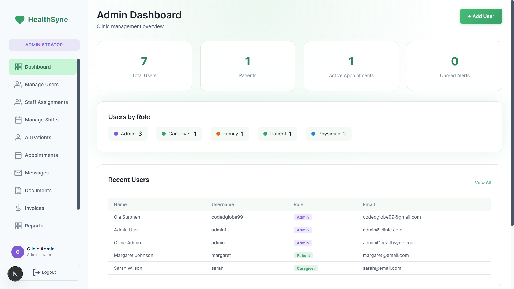
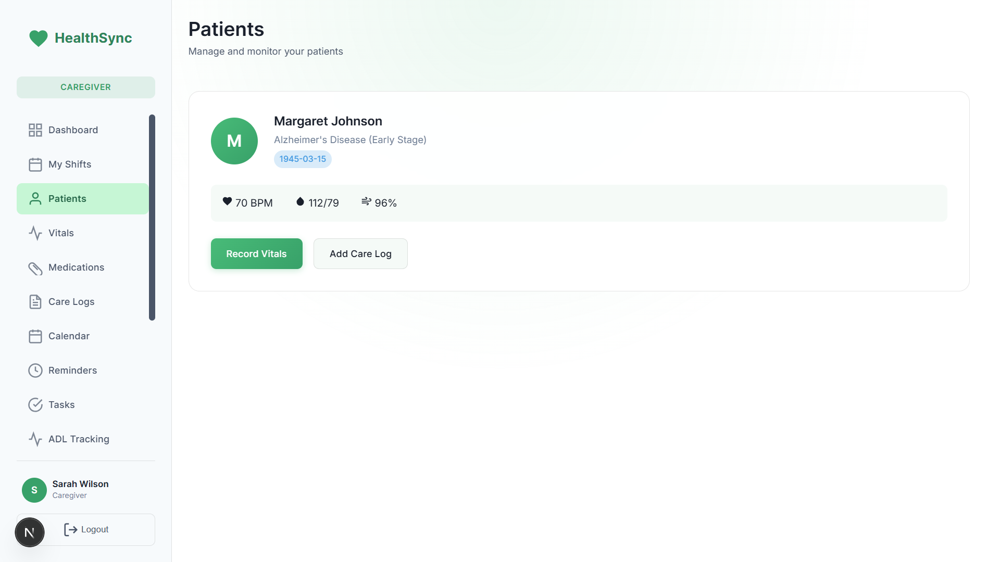
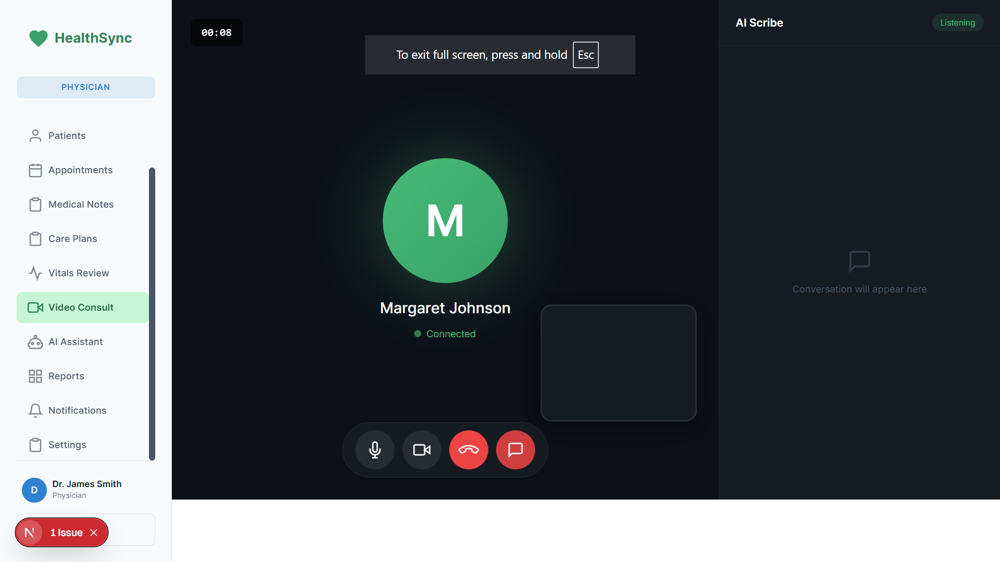

Project Overview
HealthSync is a comprehensive healthcare management platform designed to bridge the gap between patients, healthcare providers, and family members. The platform supports multiple user roles with dedicated dashboards and features tailored to each stakeholder's needs.
Project Screenshots

Admin Dashboard
Central management interface showing patient stats, appointments, and system health metrics.

Patient Vitals Monitor
Real-time vital signs tracking with heart rate, blood pressure, and alert thresholds.

Video Consultation
WebRTC-powered telemedicine interface for remote patient consultations.

Patient Portal
Patient-facing interface for viewing health records, appointments, and care plans.
Key Features
- Multi-Role Dashboard System: Separate interfaces for Administrators, Physicians, Caregivers, Patients, and Family Members with RBAC
- Real-Time Patient Monitoring: Live vitals tracking with automatic alerts for abnormal readings
- WebRTC Video Consultations: Built-in video consultation feature for remote patient care
- AI-Powered Health Assistant: OpenAI and Groq integration for health queries and care recommendations
- Two-Factor Authentication: TOTP-based 2FA with QR code setup for enhanced security
- Real-Time Data Sync: WebSockets and Server-Sent Events for instant updates
- Comprehensive Audit Logging: Full activity tracking for compliance requirements
Technology Stack
Next.js 16
React 18
Flask
Flask-SocketIO
WebRTC
JWT & TOTP
SQLite
OpenAI API
Technical Highlights
- Designed RESTful API with 50+ endpoints supporting real-time data synchronization
- Implemented rate limiting, input sanitization, and comprehensive security measures
- Built responsive multi-role interfaces with role-specific navigation and features
- Integrated WebRTC for peer-to-peer video communication with fallback mechanisms